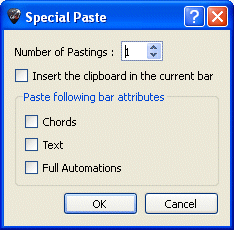

Wie kann man bei einer einzelnen Spur Takte einfügen
oder lõschen?
Wie kann man bei einer einzelnen Spur Takte einfügen
oder lõschen?
Schneidet aus oder kopiert den Inhalt der Mehrfach-Auswahl, berücksichtigt also nicht die Struktur der Takten (Taktarten, Vorzeichen...), ist Multistimme und kann zwischen mehreren verschiedenen Spuren eingesetzt werden, auch wenn die Instrumente nicht kompatibel sind (Gitarre und Klavier zum Beispiel), mit Ausnahme der Drum-Spuren. Kann daher für die Transposition nützlich sein.
Wenn man viele Takte kopieren will, ist es sinnvoll, eine Multi-Auswahl in der Gesamtansicht zu machen für eine bessere Sicht der kopierten Takte.
Berücksichtigt die Struktur der Takte und kopiert ganze Takte indem es die Multi-Auswahl zu den Takten erweitert. Das Ausschneiden lõscht die Takte von allen Spuren.
Fügt den Inhalt der Zwischenablage in die aktuelle Auswahl oder standardsweise vor der Auswahl, wenn die Auswahl mehr als einen Takt enthält, fügt es Takte hinzu, sonst aber ergänzt es den aktuellen Takt mit dem Inhalt der Zwischenablage.Wenn sich der Cursor auf einen leeren Takt befindet, erlaubt das Einfügen leere Takte zu füllen und fügt Takte ein, wenn man es braucht.
Das Sondereinfügen kann die Anzahl an Einfügungen aussuchen und was man einfügen wird.

Wie kann man bei einer einzelnen Spur Takte einfügen
oder lõschen?Auf Grund der konsequenten Berücksichtigung der musikalischen Integrität alle Spuren
durch Guitar Pro (Siehe Taktbearbeitung), ist das Einfügen oder Lõschen von Takten in nur eine Spur allein nicht zu raten, da ein Takt in allen Spuren gleichzeitig vorhanden sein muss. Um Takte zu lõschen, brauchen Sie nur die gewünschten Takte in eine Multi-Auswahl zu kopieren oder einzufügen.
Wenn Sie einen Takt auf eine Spur einfügen wollen, benutzen Sie die Funktion Kopieren/Einfügen so:
wählen Sie den Bereich zwischen dem 10. und dem letzten Takt, und benutzen Sie die Menüleiste Takt > kopieren;
Gehen Sie zum 11. Takt, und benutzen Sie das Menü Takt > Einfügen;
Wählen Sie eine Multi-Auswahl aus (Doppelklick) und dann auf Lõschen.
Die Methode um mehrere Takte einzufügen ist die gleiche.
 Hinweis:
Guitar Pro kann zwischen 2 Dateien und auf 2 Spuren ausschneiden/kopieren/einfügen
(außer Schlagzeug), obwohl sie nicht vom gleichen Typ sind (Guitar Pro
wird sie dann transponieren und mõglicherweise eine automatische Platzierung
der Finger vornehmen).Wenn Sie zwischen eine gepitchte Spur und einer
Percussion-Spur kopieren, wird
Guitar Pro die Rhythmik kopieren indem es die Noten durch Pausen ersetzt.
Hinweis:
Guitar Pro kann zwischen 2 Dateien und auf 2 Spuren ausschneiden/kopieren/einfügen
(außer Schlagzeug), obwohl sie nicht vom gleichen Typ sind (Guitar Pro
wird sie dann transponieren und mõglicherweise eine automatische Platzierung
der Finger vornehmen).Wenn Sie zwischen eine gepitchte Spur und einer
Percussion-Spur kopieren, wird
Guitar Pro die Rhythmik kopieren indem es die Noten durch Pausen ersetzt.